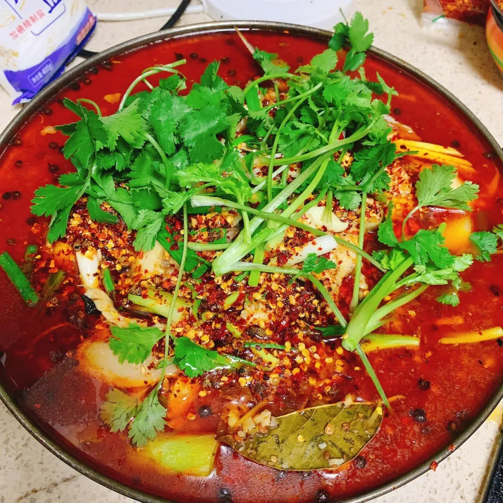

Recipe Detail
Recipe Detail
Spicy Boiled Fish

Required ingredients
List of ingredients
- 500g Fish fillets (like tilapia or cod), thinly sliced
- 1 tbsp Ginger, minced
- 5 cloves Garlic, minced
- 2 Green onions, chopped
- 1 cup Bean sprouts
- 15-20 Dried red chili peppers
- 1 tbsp Sichuan peppercorns
- 4 cups Chicken or fish broth
- 3 tbsp Chili bean paste (Doubanjiang)
- 2 tbsp Light soy sauce
Other
-
- Difficulty level: medium
- Required time: 20min
Steps
- Marinate the fish slices with salt and a bit of the starch slurry for about 10 minutes.
- In a large pot, bring the chicken or fish broth to a simmer.
- While the broth simmers, heat oil in a separate wok or skillet over medium heat. Add dried red chili peppers and Sichuan peppercorns. Fry until fragrant.
- Add in the minced ginger, garlic, and chili bean paste, stirring frequently until the oil is red and fragrant.
- Transfer the spicy oil mixture into the simmering broth. Add light soy sauce and sugar, stirring well.
- Gently slide the marinated fish slices into the spicy broth. Let them cook until they turn white and are just cooked through.
- Add the bean sprouts and cook for another 2 minutes.
- Thicken the broth slightly with the remaining starch slurry, stirring continuously.
- Transfer the fish and broth to a serving bowl, and garnish with chopped green onions.
- Serve hot and enjoy the numbing and spicy flavors!